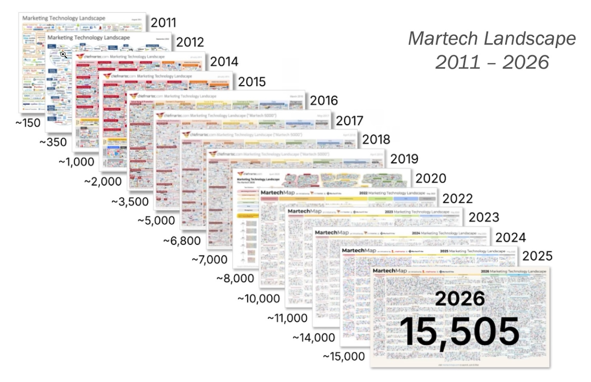
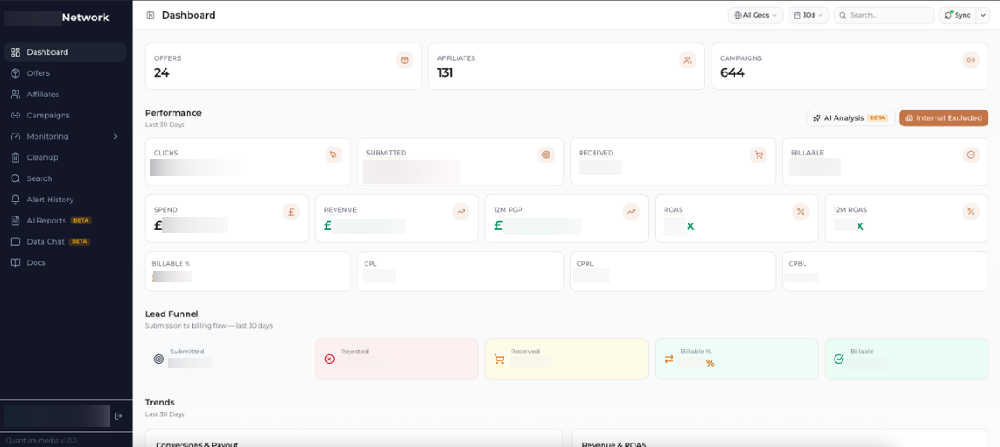
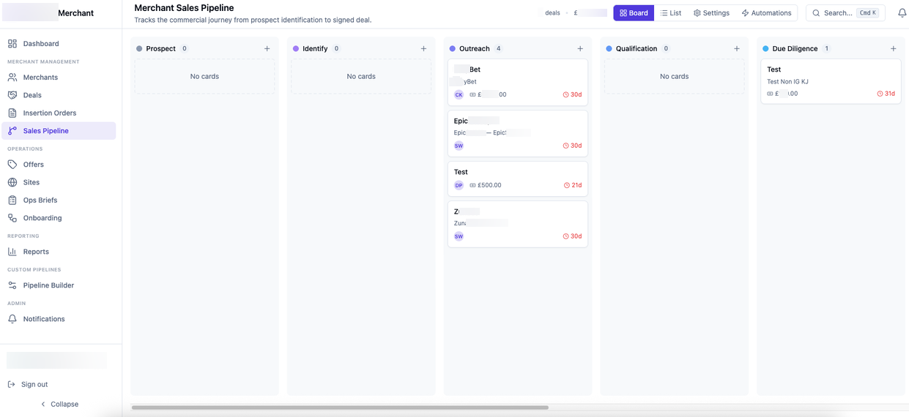

= Dead?
differently for my
MarTech stack?
vibecode
my tool?
gonna take
over
my job?
Code is cheap,
Requirements are expensive.
The shift from SaaS to self-building in MarTech.
* working notes of a marketing technology expert
I fell in love with MarTech in 2012.
For 15 years, the answer was simple: find the right tool… but now, apparently, we're in a SaaSpocalypse.

In choosing tools… we had two options.
Scope it. Spec it. Engineers. Code review. Repeat for 18 months.
Years of dev — for 10% of what you need.
Plug it in. Hits 50 of your requirements. Now: integrate, maintain, keep the data flowing.
Built for 1,000 other businesses. Not for you.
Every tool we buy: 1,000 features. We use 50.
Every company works differently — different stacks, different processes. The other 950 are built for someone else's workflow, not ours.
What if this is all changing
with the maturity of AI?
it's moving fast. Faster than any tech advancement in the last 20 years.
The bottleneck used to be writing it — slow, back and forth with engineers.
Now it's explaining what we want — and knowing what we need.
The bottleneck moves from building to explaining.
Build just got more appealing. With velocity.
My MarTech decision process is changing.
Stop buying packages. Take the parts.
Stop hunting for the next tool for every small need.
Use the SaaS you have as infrastructure.
Take the parts. Build what you need on top.
…and AI gives you the velocity to assemble.
We should start to treat SaaS as Headless infrastructure.…and not default to finding a new tool for our requirement.
What does it mean in practice?
Deeply embedded.
Useful data, good API.
Nightmare to migrate.
Awful UI — steep learning curve.
Low adoption.
Too expensive for what we use.
Only a small subset matters.
Per-seat pricing — limited access.
Let's look at some real examples of headless thinking.…where building solves the need faster than going through the buying process.
Avoid the Painful migrations.
Deeply embedded.
Useful data, good API.
Nightmare to migrate.
Awful UI — steep learning curve.

Keep the foundation. Rebuild the layer.
Don't buy everyone else's tool.
Paying a premium.
Only using a fraction of the features.
Per-seat pricing — limited team access.
Never integrated with the rest of our stack.

Don't fear the small build that is easy to maintain and will solve a lot.
From 15,000 tools to Self-Build.
This started as my own hunch. The State of Martech sees the same shift at industry scale. Most of the next billion apps probably won't come from SaaS vendors.
Source: The State of Martech 2025 — Scott Brinker & Frans Riemersma
Personal tools are a way of working.
Billions of apps only makes sense when each one is sized for a single person, or a small team. That's how the hypertail adds up.
Next: one I built for myself.
Personal example: trading agent.
An agent built around an evolving strategy.
Data, APIs, prompts, a journal.
I talk to it daily, I refine the loop.
It supports decisions and learns from mistakes.

SaaS is moving in the
same direction.
this is not just my hunch. the vendors are pivoting the same way.
Headless 360
Agents call APIs, invoke MCP tools, and run CLI commands directly.
SDK / MCP
Workflow API, SDK, MCP and app integrations as infrastructure.
MCP as a gateway for agents; dashboards via PostHog AI, MCP, API or onboarding wizard.
the platform stays. the surface follows.
This is becoming
a basic marketing skill.
AI moves you horizontally
"AI is a tool, like Excel was when we all had to learn it."
go as deep as your work requires.
Where this leaves us.
SaaS is not dead, but the way we use it is changing.
Code is cheaper, requirements matter more.
Look for foundations, build what's personal.
Expand horizontally, it's the new basic skill.
Start using the tools.
the learning curve when you move away from the chat is quite steep.
Thank you.
— Alessandro Moretti